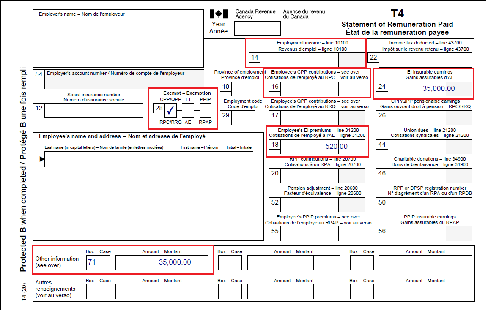
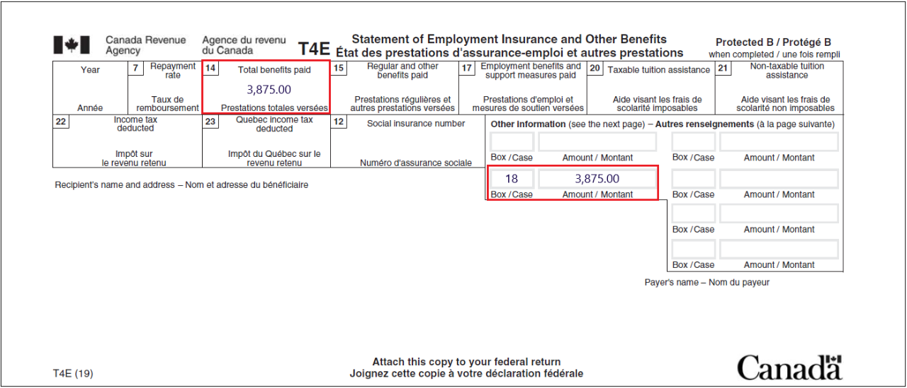

On this page
- Status Indian definition
- Employment related expenses
- Exempt income
- Form T90 Income exempt under the Indian Act
- Tax slips that do not indicate exemptions
- Social assistance payments
- COVID-19 benefits (T4A)
- Tax slips that indicate exempt income
- Employment income (T4)
- Employment insurance and other benefits (T4E)
- Northern residents deductions
- Residency information for tax administration agreement
Status Indian definition
Many First Nations people in Canada prefer not to be referred to as Indians. However, for purposes of the tax exemption under section 87 of the Indian Act, the CRA uses the term Indian because it has a legal meaning in the Indian Act. Individuals who are Indians, as defined in the Indian Act, are often referred to as Status Indians.
Generally, a Status Indian is subject to the same tax rules as other Canadian residents unless their income is eligible for tax exemption under section 87 of the Indian Act. If a Status Indian's personal property, including income, is earned or situated on a reserve then it is exempt from tax. This may include employment income earned by a Status Indian who does not live on a reserve, but who performs their duties of employment on a reserve.
For more information, refer to the Indian Act Exemption for Employment Income Guidelines.
Important note
As a CVITP volunteer, you are not required to determine an individual's status or income exemption.
Employment-related income
Generally, if a Status Indian receives the following types of income, the CRA treats them in the same way as the employment income that gave rise to the benefit:
- Employment Insurance benefits (EI)
- Canada Pension Plan benefits (CPP)
- Quebec Pension Plan benefits (QPP)
- registered pension plan benefits
- retiring allowances
- wage-loss replacement plan benefits
Exempt income
Certain amounts may not be claimed as deductions if they are directly related to tax-exempt income. If the income is only partially exempt, the deduction is granted in the same proportion. For example, a Status Indian who pays union dues and whose income is only 60% exempt, would only be able to claim 40% of the union dues as a deduction to offset the taxable portion of their employment income.
Oher deductions may include the Registered Pension Plan (RPP) contributions.
Tax-exempt income is not considered in the calculation of many deductions, tax credits, and benefits, including:
- Canada child benefit (CCB)
- GST/HST credit
- RRSP deduction limits
- charitable donations
- medical expenses
Form T90 Income exempt under the Indian Act
Individuals who are registered, or eligible to be registered, as a Status Indian under the Indian Act and have income that is tax-exempt under the Indian Act can use the form T90 to calculate their net exempt income. With this completed form, the CRA can properly calculate the individual’s Canada training credit limit (CTCL) for the following year, if applicable, and the Canada workers benefit (CWB) for the current tax year.
For example, if an individual’s tax exempt income qualifies them for the CWB, that same exempt income would not affect the calculation of their Canada child benefit (CCB) or their GST/HST credit.
Tax slips that do not indicate exemptions
These slips do not indicate if the stated income is fully or partially exempt from tax, or if it needs to be included or excluded from an individual’s return. It is the individual’s responsibility to inform you of any tax exempt amounts.
| Information slip number | Name of information slip |
|---|---|
| T4A(P) | Statement of Canada Pension Plan Benefits |
| T4RIF | Statement of Income from a Registered Retirement Income Fund |
| T4RSP | Statement of RRSP income |
| T5 | Statement of Investment Income |
| T5007 | Statement of Benefits |
| T5008 | Statement of Securities Transactions – slip information for individuals |
| T3 | Statement of Trust Income Allocations and Designations |
| RRSP contribution receipt | Slip information for individuals |
| T4A | Statement of Pension, Retirement, Annuity, and Other Income |
Ufile tip
Generally, tax slips that do not indicate tax-exempt income and deductions are reported under the Status Indian exemptions section of UFile.
Once the tax exempt amounts are entered in their appropriate fields within the software, the tax-exempt income is reported on form T90, automatically.
For more information, refer to specific situations.
Social assistance payments
Individuals must report all social assistance payments paid by a municipal, provincial, or territorial government. A T5007 slip is issued, regardless of an individual's status.
Social assistance payments paid by a band council to their status members living on reserve are tax exempt. For these types of payments, the band council issues an information slip or a letter.
Ufile tip
The tax-exempt social assistance payments are reported under both the social assistance payments, and the Status Indian exemptions section of UFile.
For more information, refer to specific situations.
COVID-19 benefits (T4A) (Indigenous)
The COVID-19 benefits are taxable the same way as employment-related income. This means that if all the employment income the individual earned to become eligible for the COVID-19 benefits was tax exempt then the COVID-19 benefits they received are also fully tax exempt. If only 50% of the employment income was tax exempt then the individual’s COVID-19 benefits are also only 50% tax exempt. The tax exempt amount is not identified as such on the slip
The COVID-19 benefits that may be tax exempt under the Indian Act include:
- box 197 for Canada Emergency Response Benefit (CERB) payments
- box 200 for provincial/territorial COVID-19 financial assistance payments
- box 202 for Canada Recovery Benefit (CRB) payments
- box 203 for Canada Recovery Sickness Benefit (CRSB) payments
- box 204 for Canada Recovery Caregiving Benefit (CRCB) payments
- box 211 for Canada Worker Lockdown Benefit (CWLB) payments
Ufile tip
The software automatically reports the taxable amount on line 13000.
For more information, refer to specific situations.
Tax slips that indicate exempt income
The tax information slips indicate the amounts exempt from taxation under section 87 of the Indian Act. Use the table as a reference guide when dealing with tax-exempt income.
| Tax information slips | |
|---|---|
| Tax information slip | Box identifying exempt income (details) |
| T4 – Statement of Remuneration Paid |
|
| T4A – Statement of Pension, retirement, Annuity, and Other Income |
|
| T4E – Statement of Employment Insurance and Other Benefits |
|
Employment income
Employment income that is tax-exempt is found in box 71 instead of box 14.
Example of a T4 information slip for a Status Indian who has earned an income of $35,000 on a reserve.
Text version
T4 – Statement of Remuneration Paid
Protected B
Box 14: Employment income – line 10100: empty field is highlighted
Box 16: Employee’s CPP contributions – line 30800: empty field is highlighted
Box 18: Employee’s EI premiums – line 31200: 520.00 is highlighted
Box 24: EI Insurable earnings: 35,000.00 is highlighted
Box 28: Exempt CPP/QPP is checked
Other information section: Box 71: 35,000.00 is highlighted
Since only a taxable salary or wages paid are reported in box 14 and the income in the T4 example above is tax exempt, box 14 is blank.
Tax exempt salary or wages paid to a Status Indian are still insurable earnings and the employer must deduct Employment Insurance (EI) premiums. An amount is entered in box 18, indicating the employee’s EI premiums that were deducted and in box 24, indicating the EI insurable earnings.
CPP or QPP contributions are generally not paid on tax-exempt salary under the Indian Act since it is not included in pensionable employment. However, an employer may choose to pay CPP or QPP contributions on behalf of all of their employees who earn tax-exempt employment income. In this case, the Status Indian employee has CPP contributions deducted from their employment income and the amount is recorded in box 16.
For more information, refer to employment and other benefits.
Employment insurance and other benefits
Canada Emergency Response Benefit (CERB) from Service Canada or any Employment Insurance (EI) benefit payments are found in box 14 of the T4E slip.
The tax exempt amount is found in box 18. The amount or lack thereof in box 18 may be in error soit is important to confirm this amount with the individual.
Example of a T4E, Statement of Employment Insurance and Other Benefits, where an individual has received employment insurance or other benefits.
Text version
T4E – Statement of Employment Insurance and Other Benefits
Protected B
Box 14: Total benefits paid: 3,875.00 is highlighted
Box 18: Amount: 3,875.00 is highlighted
In this example, the recipient has status. Their non-taxable benefits received, in the amount of $3,875.00, are indicated in box 18.
For more information, refer to employment and other benefits.
Northern residents deductions
Individuals living in northern Canada, and in other remote Canadian locations, may be eligible to claim the northern residents deductions.
For more information, refer to Northern residents deduction and the Northern residents web page on Canada.ca.
Residency information for tax administration agreements
For individuals living in British Columbia, Newfoundland and Labrador, the Northwest Territories, or the Yukon, it is recommended to complete the Residency information for tax administration agreements section. Although completing this section is not mandatory, doing so ensures that money meant to support specific Indigenous groups is correctly calculated.
The software automatically generates the Residency information for tax administration agreements section within the Interview setup whenever one of the participating provinces or territories of residence is selected. Select the appropriate response from the drop-down menu to either indicate which community they resided in on December 31, or that the individual did not reside on settlement lands or within a designated community. If the individual is unsure if they reside on the specific lands, ask them to contact their local Band or you may contact the CVITP dedicated help line at 1-866-398-3488.
The table includes the names of the settlement lands and designated communities.
| Province or territory | Residing on lands or communities |
British Columbia |
Nisga’a Lands |
Newfoundland and Labrador |
Inuit communities of Rigolet, Nain, Hopedale, Makkovik, Postville, or on Labrador Inuit Lands |
Northwest Territories |
Tåîchô communities of Behchokö (Rae-Edzo), Whatì (Lac La Martre), Gamètì (Rae Lakes), or Wekweètì (Snare Lake) or on Tåîchô lands |
Yukon |
Settlement Land of a self-governing Yukon First Nation |
For more information, refer to:
- UFile instruction s
- Crown-Indigenous Relations and Northern Affairs Canada (CIRNAC) and Indigenous Services Canada (ISC)